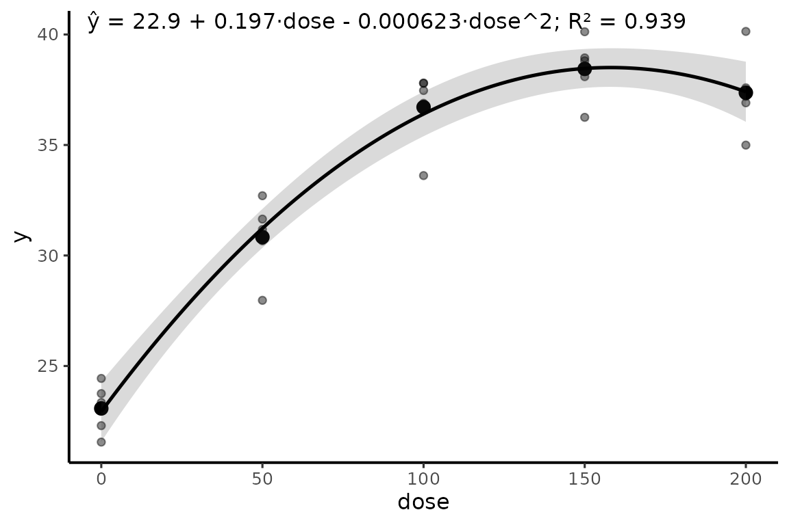

reg_poly()
A função ajusta todos os graus solicitados e mantém todos os modelos.
Quando há vários graus, o modelo de maior grau é armazenado em
$model apenas para gerar predições e gráficos; isso não
significa que ele tenha sido selecionado como superior.
Exemplo 1: linear e quadrático
rp1 <- reg_poly(dados, y, dose, degree = 1:2)
rp1
#> Regressão polinomial
#> --------------------
#> Resposta: y
#> Preditor: dose
#> Modelo principal para predição: grau 2
#>
#> Comparação descritiva dos modelos:
#> grau n R2 R2_ajustado RMSE AIC AICc BIC
#> 1 25 0.7456492 0.7345905 2.988943 131.69291 132.83577 135.3495
#> 2 25 0.9391440 0.9336116 1.462018 97.93781 99.93781 102.8133
#>
#> Teste de falta de ajuste:
#> grau gl_falta_ajuste SQ_falta_ajuste F p_valor
#> 1 3 171.275541 21.9293466 1.557752e-06
#> 2 2 1.368517 0.2628281 7.714885e-01Exemplo 2: quadrático previamente definido
rp2 <- reg_poly(dados, y, dose, degree = 2, compare = FALSE)
rp2$coeficientes$grau2
#> termo estimativa erro_padrao estatistica p_valor ic_inferior
#> 1 (Intercept) 22.9333144017 6.559537e-01 34.96179 8.947779e-21 21.5729496183
#> 2 dose 0.1970110257 1.554057e-02 12.67721 1.375411e-11 0.1647818530
#> 3 I(dose^2) -0.0006231845 7.451134e-05 -8.36362 2.800399e-08 -0.0007777115
#> ic_superior
#> 1 24.2936791851
#> 2 0.2292401984
#> 3 -0.0004686574Exemplo 3: explorar até cúbico
rp3 <- reg_poly(dados, y, dose, degree = 1:3)
rp3$comparacao
#> grau n R2 R2_ajustado RMSE AIC AICc BIC
#> 1 1 25 0.7456492 0.7345905 2.988943 131.69291 132.83577 135.3495
#> 2 2 25 0.9391440 0.9336116 1.462018 97.93781 99.93781 102.8133
#> 3 3 25 0.9396411 0.9310184 1.456035 99.73278 102.89067 105.8272
rp3$falta_ajuste
#> grau gl_falta_ajuste SQ_falta_ajuste F p_valor
#> 1 1 3 171.275541 21.9293466 1.557752e-06
#> 2 2 2 1.368517 0.2628281 7.714885e-01
#> 3 3 1 0.932054 0.3580079 5.563308e-01Teste de falta de ajuste
Quando há replicação em níveis de x,
reg_poly() compara cada polinômio com um modelo que trata
x como fator. O resultado ajuda a avaliar se a forma
polinomial deixa estrutura sistemática sem explicar.
ponto_critico()
Exemplo 1: máximo quadrático
mq <- lm(y ~ dose + I(dose^2), data = dados)
ponto_critico(mq, range = range(dados$dose))
#> x_critico y_predito classificacao dentro_intervalo ic_inferior ic_superior
#> 1 158.068 38.50388 máximo TRUE 142.7962 173.3397Exemplo 2: checar extrapolação
ponto_critico(mq, range = c(0, 100))
#> Warning: Há ponto crítico fora do domínio informado; sua interpretação implica
#> extrapolação.
#> x_critico y_predito classificacao dentro_intervalo ic_inferior ic_superior
#> 1 158.068 38.50388 máximo FALSE 142.7962 173.3397Exemplo 3: diretamente do reg_poly()
ponto_critico(rp2)
#> x_critico y_predito classificacao dentro_intervalo ic_inferior ic_superior
#> 1 158.068 38.50388 máximo TRUE 142.7962 173.3397O intervalo da posição do ponto quadrático é aproximado pelo método delta. Pontos fora do intervalo experimental são explicitamente marcados como extrapolação.
plot_reg()

Exemplo 2: controlar dados e variáveis
plot_reg(rp2, data = dados, x = dose, y = y, show_raw = TRUE, show_means = TRUE)
equar2() e contrastes polinomiais
equar2() continua disponível para o fluxo histórico que
usa médias por dose e os p-valores dos contrastes linear e
quadrático.
dados$dose_f <- factor(dados$dose)
mod_f <- lm(y ~ bloco + dose_f, data = dados)
emm <- emmeans::emmeans(mod_f, ~ dose_f)
cp <- contraste_poly(emm, scores = c(0, 50, 100, 150, 200), degree = 2)
medias <- aggregate(y ~ dose, data = dados, FUN = mean)Exemplo 1
equar2(medias, cp)
#> [1] "hat(y) == 22.93 + 0.197^\"**\" * x - 0.0006^\"**\" * x^2 ~ \";\" ~ R^2 == \"99.8%\""Exemplo 2: retorno detalhado
eq2 <- equar2(medias, cp, details = TRUE)
eq2$equation
#> [1] "hat(y) == 22.93 + 0.197^\"**\" * x - 0.0006^\"**\" * x^2 ~ \";\" ~ R^2 == \"99.8%\""
eq2$p_values
#> linear quadratic
#> 9.089034e-11 1.159374e-06Exemplo 3: R² na escala 0 a 1
equar2(medias, cp, r2_percent = FALSE, digits = c(2, 4, 5, 3))
#> [1] "hat(y) == 22.93 + 0.1970^\"**\" * x - 0.00062^\"**\" * x^2 ~ \";\" ~ R^2 == \"0.998\""A equação de equar2() é ajustada às médias fornecidas.
Portanto, o R² mostrado descreve a regressão dessas médias, não o ajuste
às unidades experimentais individuais.